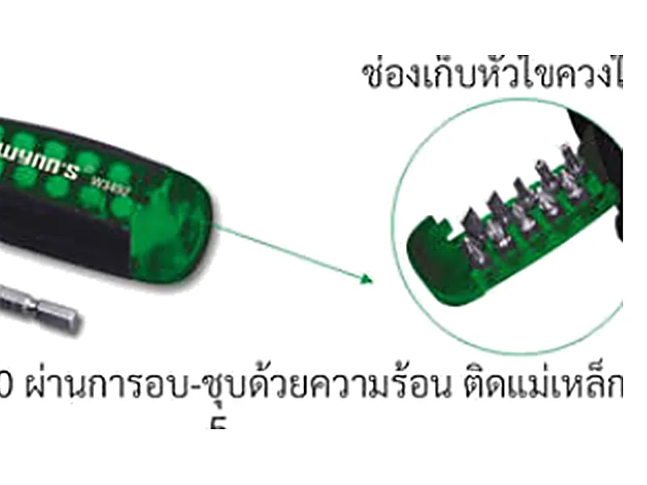
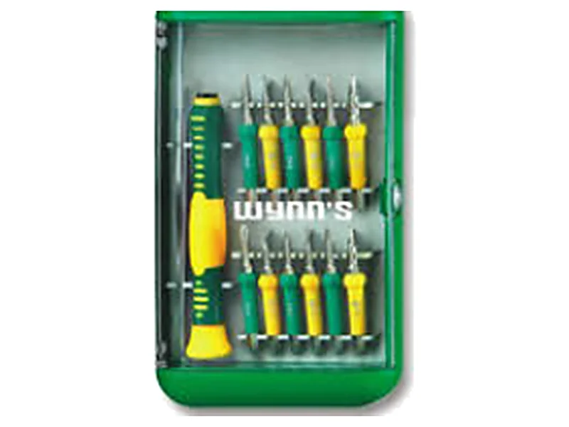

ไขควงหัวแฉก PH PZ หัวแบน และท็อกซ์ ต่างกันยังไง
ไขควงหัวแฉก หัวแบน PH PZ ท็อกซ์ และหกเหลี่ยม แต่ละแบบใช้กับสกรูคนละชนิด ใช้ผิดแบบแล้วหัวสกรูเยินง่าย บทความนี้อธิบายว่าไขควงแต่ละหัวต่างกันยังไง ดูหัวสกรูยังไงให้รู้ว่าต้องใช้แบบไหน และเลือกเบอร์ให้พอดีร่อง พร้อมรุ่นในแคตตาล็อก WYNNTOOLS
หัวไขควงมีกี่แบบ
หัวไขควงต้องตรงกับร่องบนหัวสกรู ถ้าใช้ผิดแบบหรือผิดเบอร์ ไขควงจะลื่นหลุดจากร่อง หัวสกรูเยินและขันไม่แน่น ตารางนี้สรุปหัวที่พบบ่อยและวิธีดูจากหัวสกรู
| หัว | ดูจากหัวสกรูยังไง | พบบ่อยที่ไหน |
|---|---|---|
| แบน (SL) | ร่องตรงเส้นเดียว เรียกขนาดตามความกว้างปลายไขควงเป็นมิลลิเมตร เช่น แบน 5.0 | สกรูรุ่นเก่า ปลั๊กและสวิตช์ไฟ ฝาครอบ |
| แฉก (PH) | ร่องกากบาท 4 แฉก เรียกเบอร์ PH000 ถึง PH3 ยิ่งเลขมาก หัวยิ่งใหญ่ | สกรูทั่วไปในบ้าน เฟอร์นิเจอร์ เครื่องใช้ไฟฟ้า |
| โพซี่ (PZ) | ร่องกากบาทเหมือน PH แต่มีขีดเล็กเพิ่มระหว่างแฉก | สกรูงานไม้และเฟอร์นิเจอร์ประกอบเอง |
| ท็อกซ์ (T) | ร่องรูปดาว 6 แฉก เรียกเบอร์ T เช่น T5 T15 T20 | อุปกรณ์อิเล็กทรอนิกส์ คอมพิวเตอร์ ชิ้นส่วนรถ |
| หกเหลี่ยม (H) | ร่องหกเหลี่ยมด้านใน เรียกขนาดเป็นมิลลิเมตร เช่น H2.0 | อุปกรณ์อิเล็กทรอนิกส์ จักรยาน เฟอร์นิเจอร์ |
| วาย (Y) | ร่อง 3 แฉกเป็นรูปตัว Y | ของเล่นและอุปกรณ์อิเล็กทรอนิกส์บางรุ่น |
PH กับ PZ ต่างกันยังไง ใช้แทนกันได้ไหม
สองแบบนี้ดูคล้ายกันมาก วิธีแยกง่ายที่สุดคือดูหัวสกรู ถ้ามีขีดเล็กๆ เป็นรูปกากบาทซ้อนอยู่ระหว่างแฉกหลัก แปลว่าเป็น PZ ถ้าไม่มีขีด เป็น PH
ใช้ไขควง PH กับสกรู PZ พอขันเบาๆ ได้ แต่ปลายไม่แนบร่องเต็มที่ ออกแรงมากแล้วจะลื่นหลุดและทำให้หัวสกรูเยิน ส่วนไขควง PZ กับสกรู PH มักลงร่องไม่สนิท จึงควรใช้ให้ตรงแบบ ถ้าต้องทำงานไม้หรือประกอบเฟอร์นิเจอร์บ่อย ให้มีทั้งสองแบบไว้
ชุดไขควงแม่เหล็กเปลี่ยนหัว 12 ชิ้น W3492 มีทั้งหัวแฉก PH0 PH1 PH3 หัวแบน หัว T15 T20 และหัว PZ1 PZ2 อยู่ในด้ามเดียว
เลือกเบอร์ให้พอดีร่อง
ปลายไขควงที่ดีต้องเต็มร่องสกรูพอดี ไม่เล็กจนหมุนคลอนในร่อง สำหรับหัวแฉก ลองเสียบแล้วบิดเบาๆ ถ้าไขควงโยกไปมาได้ ให้ขยับขึ้นหนึ่งเบอร์ สำหรับหัวแบน ความกว้างปลายควรใกล้กับความยาวร่อง และความหนาปลายควรเต็มความกว้างร่อง
งานซ่อมมือถือ นาฬิกา และอุปกรณ์อิเล็กทรอนิกส์ใช้หัวเล็กมาก เช่น PH000 PH00 T3 ถึง T8 และหัว Y ชุดไขควงทั่วไปมักไม่มีหัวพวกนี้ ควรใช้ชุดสำหรับงานซ่อมโดยเฉพาะ


ไขควงตอก ไขควงแม่เหล็ก และไขควงเปลี่ยนหัว
ไขควงตอก
ออกแบบให้ใช้ค้อนเคาะท้ายด้ามได้ ช่วยคลายสกรูที่ติดแน่นหรือเป็นสนิม ไขควงตอก W0345 ทำจากเหล็ก CR-V 6150 ปลายติดแม่เหล็ก แคตตาล็อกระบุว่าด้ามโพลิเมอร์รองรับการตอก มีขนาด 6×100 ถึง 8×300 มม.
ปลายแม่เหล็ก
ปลายแม่เหล็กดูดสกรูไว้ ช่วยตอนขันในที่แคบหรือขันเหนือศีรษะ สกรูไม่หล่นหาย
ไขควงเปลี่ยนหัว
ด้ามเดียวเปลี่ยนหัวได้หลายแบบ ประหยัดที่และพกง่าย เช่นชุด W2089A มีหัวแฉก PH0 ถึง PH3 และหัวแบน 5.0 6.0 7.0
หัวไขควงสำหรับสว่าน
ถ้าขันด้วยสว่านไฟฟ้า ให้ใช้หัวไขควงสำหรับดอกสว่านโดยเฉพาะ หัวแฉก W0618 ทำจากเหล็ก S2 แคตตาล็อกระบุความแข็ง HRC58–62
เหล็ก CR-V กับ S2 ที่เขียนบนไขควง
CR-V คือเหล็กกล้าผสมโครเมียมและวาเนเดียม ใช้ทำไขควงและประแจทั่วไป ส่วน S2 เป็นเหล็กกล้าเครื่องมือที่ทนแรงกระแทกได้ดี นิยมใช้ทำหัวไขควงสำหรับสว่าน ทั้งสองแบบไม่ใช่สแตนเลส เก็บไว้ที่ชื้นนานๆ ก็ขึ้นสนิมได้ ควรเช็ดให้แห้งหลังใช้
อ่านวิธีดูแลเครื่องมือไม่ให้เป็นสนิมได้ในดูแลเครื่องมือช่างไม่ให้เป็นสนิม
คำถามที่ถามกันบ่อย
ไขควงแฉกเบอร์ไหนใช้บ่อยที่สุด
สกรูทั่วไปในบ้านและเฟอร์นิเจอร์ส่วนใหญ่ใช้ PH2 ส่วน PH1 ใช้กับสกรูเล็ก และ PH3 ใช้กับสกรูใหญ่
ใช้ไขควง PH กับสกรู PZ ได้ไหม
พอขันเบาๆ ได้ แต่ถ้าออกแรงมาก ไขควงจะลื่นหลุดและทำให้หัวสกรูเยิน ควรใช้หัว PZ ให้ตรงแบบ
ไขควงตอกต่างจากไขควงธรรมดายังไง
ไขควงตอกออกแบบให้ใช้ค้อนเคาะท้ายด้ามได้ แรงกระแทกช่วยให้ปลายไขควงกดแน่นในร่องและคลายสกรูที่ติดแน่นหรือเป็นสนิม ไขควงธรรมดาไม่ควรเคาะเพราะด้ามอาจแตก
ซ่อมมือถือใช้ไขควงหัวอะไร
ขึ้นกับรุ่นเครื่อง ที่พบบ่อยคือหัวแฉกเล็ก PH000 PH00 หัวท็อกซ์เล็ก และหัว Y ดูหัวสกรูก่อนแล้วเลือกชุดไขควงซ่อมอิเล็กทรอนิกส์ที่มีหัวนั้น
ซื้อยกโหลหรือยกลังได้ไหม
ได้ จำนวนต่อแพ็กและต่อลังของแต่ละรหัสอยู่ในหน้าไขควงทั้งหมด เช่น ไขควงตอก W0345A บรรจุ 12/144 ส่งรหัสมาทาง LINE ทางร้านแจ้งราคาให้
อ่านต่อ
ไม่แน่ใจว่าใช้หัวไหน? ส่งรูปสกรูมา
ถ่ายรูปหัวสกรูส่งทาง LINE ทีมงานสำเพ็งบอกหัวและเบอร์ที่ต้องใช้ให้